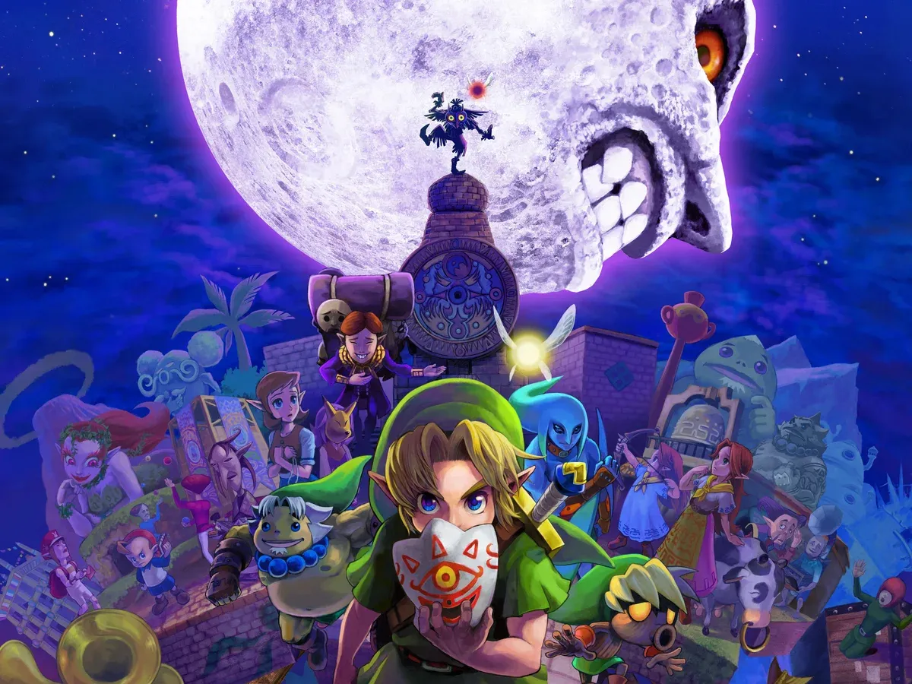

Alessandro Camargo
Edad: 20 años
Cédula: 8-1038-2097
¡Hola a todos! Mi nombre es Alessandro Camargo y me incorporo al equipo en el área de Gestión de Desarrollo de Software. Además de mi interés por la tecnología, en mi tiempo libre me gusta escuchar música y jugar videojuegos, siendo un gran seguidor de franquicias como The Legend of Zelda, Pokémon y Final Fantasy. Como dato de interés, me atraen las historias ambientadas en mundos medievales de fantasía oscura, así como los temas de terror cósmico y las criaturas lovecraftianas.

Zelda: majora's Mask/ Shadow of the Colossus
Para mí, The Legend of Zelda: Majora's Mask y Shadow of the Colossus son las cumbres del videojuego como arte, compartiendo una atmósfera de fantasía oscura, desolación y melancolía que resuena con mi gusto por lo cósmico y lo ancestral. Mientras Majora's Mask me sumerge en la desesperación psicológica de un mundo con el tiempo contado, Shadow of the Colossus me enfrenta a la soledad y la ambigüedad moral de destruir gigantes ancestrales por un deseo egoísta. Ambos títulos representan, de manera profunda, el peso del sacrificio y la resiliencia humana frente a lo inevitable y lo colosal, demostrando que el verdadero terror y la belleza radican en la vulnerabilidad de sus mundos.